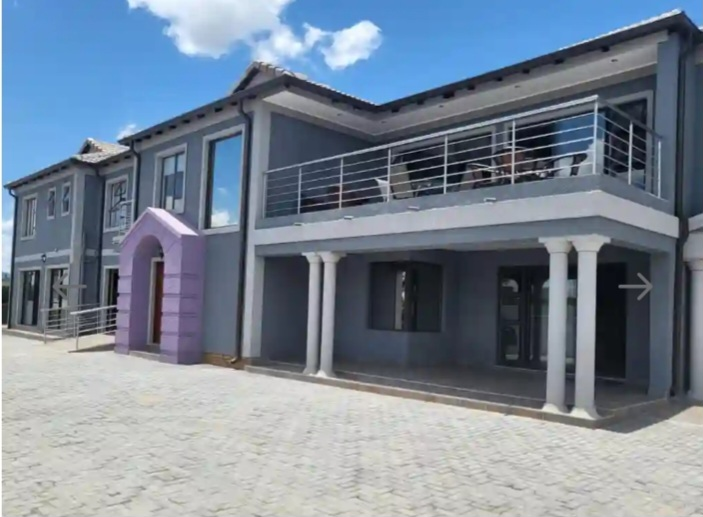
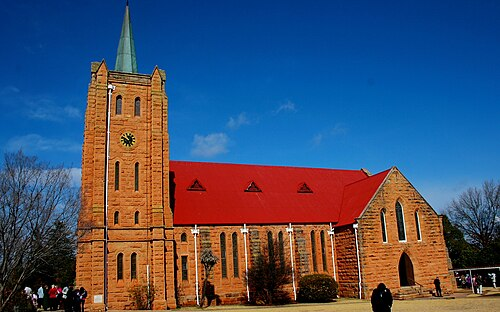

02 · Technology
One platform. Multiple realities.
A modular technology stack designed to transform ordinary locations into interactive digital destinations.

Immersive 360° Tours
High-definition panoramic environments allow visitors to explore shops, streets and destinations remotely before physically visiting.
Launch Experience
Cinematic 360° Video
Immersive motion experiences bring destinations, events and stories to life through interactive 360-degree video.
Watch Experience
Augmented Reality
Digital information can be layered directly onto the physical world, creating guided experiences and interactive discovery.
Launch AR